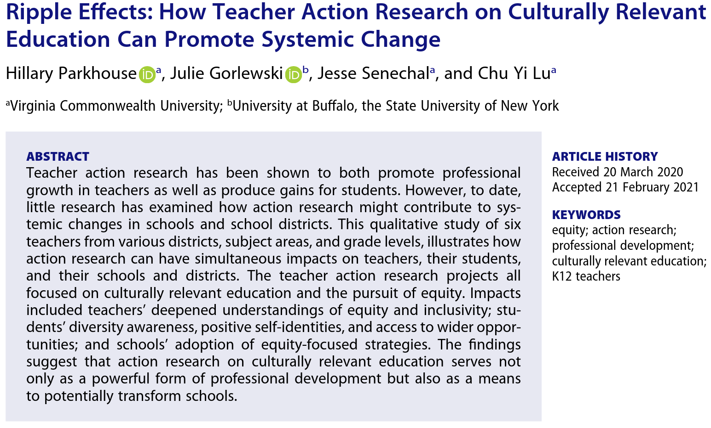
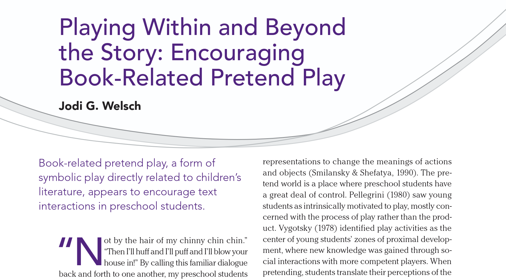
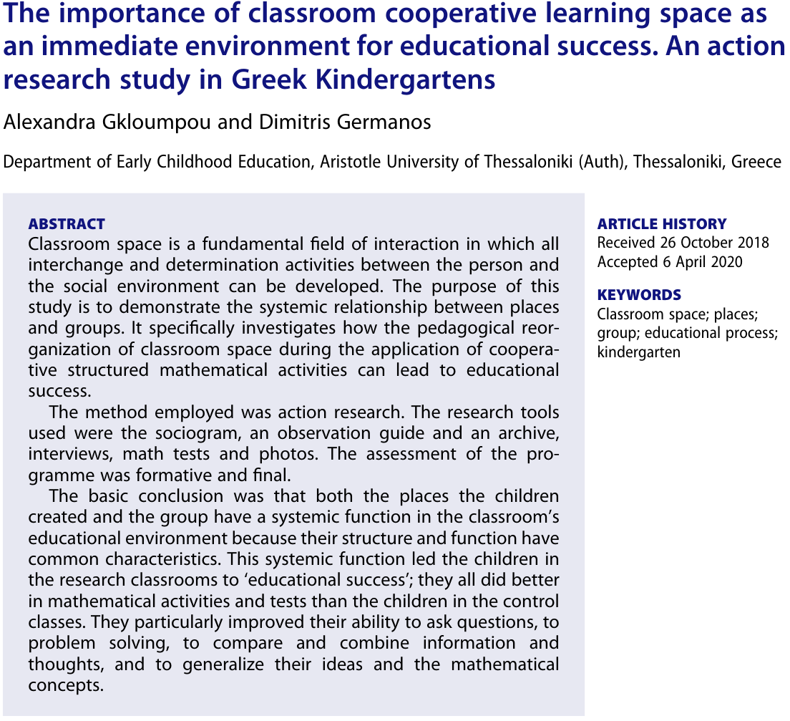

Μεθοδολογία Εκπαιδευτικής Έρευνας (0110Υ)
Χειμερινό εξάμηνο 2025-2026
2025-12-18
Ανακεφαλαίωση
Έρευνα δράσης
Γενικά
Έρευνα δράσης είναι μια συστηματική έρευνα που πραγματοποιείται από εκπαιδευτικούς, διευθυντές, σχολικούς συμβούλους ή άλλους εμπλεκόμενους με το περιβάλλον της διδασκαλίας.
Σκοπός είναι να προσφέρει στους εκπαιδευτικούς μια μέθοδο επίλυσης των καθημερινών τους προβλημάτων.
Η έρευνα δράσης είναι η έρευνα που πραγματοποιείται από τους εκπαιδευτικούς για τους εκπαιδευτικούς.
Γενικά
Η έρευνα δράσης:
- Συμβάλλει στην ενίσχυση της επαγγελματικής ανάπτυξης των εκπαιδευτικών.
- Ωθεί τους εκπαιδευτικούς προς τη συνεχή μάθηση στις σχολικές τάξεις και στις πρακτικές τους.
- Προωθεί σωστά πρότυπα και στους μαθητές τόσο για τις δεξιότητες που απαιτούνται για τη σωστή μάθηση αλλά και για την περιέργεια και το ενδιαφέρον αναζήτησης νέας γνώσης.
Γενικά
Η έρευνα δράσης:
- Ενσωματώνεται ως αναστοχαστική στάση στην καθημερινή ρουτίνα του εκαπιδευτικού.
- Συμβάλλει στην επαγγελματική στάση των εκπαιδευτικών.
- Ενθαρρύνει τους εκπαιδευτικούς:
- Να εξετάσουν τη δυναμική των τάξεών τους.
- Να αναλογιστούν την αλληλεπίδραση τόσο μεταξύ αυτών και των μαθητών όσο και των μαθητών μεταξύ τους.
- Να επικυρώσουν ή να αμφισβητήσουν πρακτικές που χρησιμοποιούν.
Βασικά χαρακτηριστικά της έρευνας δράσης
Αναγκαιότητα έρευνας δράσης
Η αναγκαιότητα της έρευνας δράσης αναδύεται από τη συχνή αποτυχία της εκπαιδευτικής έρευνας να επηρεάσει τη διδασκαλία:
- Συχνά, οι εκπαιδευτικοί δε θεωρούν τις έρευνες πειστικές ή έγκυρες.
- Οι έρευνες δε σχετίζονται με την πράξη και δε σχετίζονται με τα ερωτήματα των εκπαιδευτικών.
- Τα ευρήματα των ερευνών δε διατυπώνονται με τρόπους κατανοητούς για τους εκπαιδευτικούς.
- Το ίδιο το εκπαιδευτικό σύστημα δεν είναι σε θέση να αλλάξει, ή αντίστροφα, είναι εκ φύσεως ασταθές και επιρρεπές σε μόδες.
Είναι πειστική και έγκυρη
- Περιλαμβάνει πειστικά δεδομένα, αφού πραγματοποιείται από τους ίδιους τους εκπαιδευτικούς.
- Οι εκπαιδευτικοί επενδύουν στη νομιμότητα της συλλογής δεδομένων.
- Τα αποτελέσματα είναι έγκυρα για καθώς αναπτύσσονται λύσεις για τα πραγματικά προβλήματα στη διδασκαλία.
- Οι εκπαιδευτικοί και όχι μόνο οι εξωτερικοί ειδικοί γνωρίζουν τι δουλεύει και τι όχι μέσα στις τάξεις τους.
Είναι συναφής
Η συνάφεια μεταξύ των δημοσιευμένων αποτελεσμάτων εκπαιδευτικών ερευνών και του πραγματικού κόσμου είναι από τις πιο κοινές ανησυχίες των εκπαιδευτικών:
- Τα προβλήματα που μελετώνται μπορεί να μην είναι συναφή.
- Οι τάξεις και τα εκπαιδευτικά συστήματα που μελετώνται μπρεί να είναι διαφορετικά.
Η τάξη χαρακτηρίζεται από αβεβαιότητα.
Η έρευνα δράσης ενισχύει την δυνατότητα πρόβλεψης του/της εκπαιδευτικού.
Είναι προσβάσιμη
Τα αποτελέσματα των εκπαιδευτικών ερευνών συχνά δεν βρίσκουν το “δρόμο” τους για την τάξη επειδή:
- Δεν λαμβάνουν συχνά υπόψη τους τις πεποιθήσεις και τις αξίες των εκπαιδευτικών.
- Δεν επιτρέπουν την πρόσβαση στα ερευνητικά δεδομένα.
- Ακόμα και αν όλοι οι εκπαιδευτικοί ενημερώνονταν για τα ευρήματα ελάχιστοι θα ήταν σε θέση να αλλάξουν την πρακτική τους.
Είναι προσβάσιμη
Η “ομορφιά” της έρευνας δράσης:
- Οι ερευνητές αμφισβητούν τις δικές τους πρακτικές.
- Τα ευρήματα έχουν νόημα καθώς σχετίζονται με την περιοχή ενδιαφέροντος του ίδιου του εκπαιδευτικού.
- Η διάθεση αναστοχασμού κάνει τον εκπαιδευτικό πιο παραγωγικό μέλος της επαγγελματικής κοινότητας.
Προκλήσεις
Η απουσία σύνδεσης των αποτελεσμάτων της έρευνας και της εκπαιδευτικής πρακτικής μπορεί να οφείλεται και στο ίδιο το εκπαιδευτικό σύστημα:
- Δεν υπάρχουν επαρκώς καθορισμένοι στόχοι.
- Επιρρεπές σε μόδες και συγχρόνως δυσκίνητο.
- Υιοθέτηση πολλών αταίριαστων πρακτικών.
Η έρευνα δράσης προσπαθεί να δώσει στους εκπαιδευτικούς τα εργαλεία για να επιλύουν στο βαθμό που είναι δυνατό τα προβλήματα της καθημερινής εκπαιδευτικής πρακτικής.
Προσεγγίσεις της έρευνας δράσης
Κριτική έρευνα δράσης
Ονομάζεται κριτική διότι βασίζεται στην κριτική θεωρία και όχι γιατί είναι επικριτική.
Οι αξίες της κριτικής έρευνας δράσης είναι:
- Δημοκρατική: επιτρέπει τη συμμετοχή όλων των ανθρώπων.
- Δίκαιη: Αναγνωρίζει την ισότητα.
- Χειραφετητική: Παρέχει ελευθερία σε καταπιεστικές καταστάσεις.
- Βελτιώνει τη ζωή: Επιτρέπει την έκφραση όλου του δυναμικού των ανθρώπων.
Πρακτική έρευνα δράσης
Η πρακτική έρευνα δράσης επικεντρώνεται περισσότερο στην αναζήτηση λύσης ενός πορβλήματος που εντοπίστηκε.
Οι βασικές παραδοχές είναι ότι οι εκπαιδευτικοί ερευνητές:
- Έχουν δυνατότητα λήψης αποφάσεων για το μάθημά τους.
- Ενδιαφέρονται για την διαρκή επαγγελματική τους εξέλιξη και τη βελτίωση του σχολείου.
- Αναζητούν τον αναστοχασμό στις πρακτικές τους.
- Θα επιλέξουν μία περιοχή εστίασης.
Επίπεδα στην έρευνα δράσης
Γενικά
Η εκπαιδευτική έρευνα δράσης μπορεί να πραγματοποιηθεί σε τρία διαφορετικά επίπεδα:
- Σε ένα μόνο νηπιαγωγείο.
- Σε επίπεδο ευρύτερου σχολικού συστήματος.
- Σε ατομικό επίπεδο.
Σε ένα νηπιαγωγείο
Σε ένα μόνο νηπιαγωγείο η έρευνα δράσης μπορεί να έχει τα παρακάτω χαρακτηριστικά:
- Έρευνα δράσης από εκπαιδευτικούς πάνω σε ένα κοινό ζήτημα.
- Συνήθως, ομάδες εκπαιδευτικών με κοινά γνωστικά αντικείμενα.
- Εμπλοκή με άλλες συνεργατικές ή συμμετοχικές μορφές έρευνας, π.χ. συνεργασία με κάποιον ακαδημαϊκό ερευνητή.
Σε επίπεδο ευρύτερου σχολικού συστήματος
Σε επίπεδο ευρύτερου σχολικού συστήματος η έρευνα δράσης μπορεί να έχει τα παρακάτω χαρακτηριστικά:
- Η πλειονότητα των νηπιαγωγείων μιας περιφέρειας εντοπίζει ένα κοινό πρόβλημα.
- Έρευνα σε έναν εστιασμένο στόχο.
- Υπάρχει δυνατότητα δημιουργίας ερευνητικών ομάδων με μεγαλύτερο εύρος ειδικεύσεων, π.χ. εκπαιδευτικοί, διευθυντές, διοικητικά στελέχη, σύμβουλοι.
Σε ατομικό επίπεδο
Σε ατομικό επίπεδο η εκπαιδευτική έρευνα δράσης μπορεί να πάρει έχει τα παρακάτω χαρακτηριστικά:
- Μελέτη πτυχών της τάξης που είναι μοναδικές για τον/την εκπαιδευτικό και τους μαθητές του/της.
- Παρατήρηση των μαθητών στην τάξη κατά τη διάρκεια του μαθήματος.
- Κατασκευή απλών εργαλείων ή διαδικασιών για τη συλλογή πληροφοριών.
Η διαδικασία της έρευνας δράσης
Γενικά
Τα βασικά βήματα για την πραγματοποίηση μίας έρευνας δράσης είναι:
- Εντοπισμός της περιοχής εστίασης.
- Συλλογή δεδομένων.
- Ανάλυση και ερμηνεία των δεδομένων.
- Σχεδιασμός δράσης.
Εντοπισμός της περιοχής εστίασης
Μπορεί να είναι δύσκολο ζήτημα (συχνά είναι πολλά τα ζητήματα που έχουν να αντιμετωπίσουν)
Για την επιλογή της περιοχής εστίασης χρειάζεται να ικανοποιούνται τα ακόλουθα κριτήρια:
- Να περιλαμβάνει τη διδασκαλία και τη μάθηση και να επικεντρώνεται στην εκπαιδευτική πρακτική του ερευνητή.
- Να είναι κάτι που βρίσκεται στον έλεγχο του ερευνητή.
- Να είναι κάτι ενδιαφέρον.
- Να είναι κάτι που ερευνητής επιθυμεί να αλλάξει ή να βελτιώσει.
Εντοπισμός της περιοχής εστίασης
Ακολουθεί η αποσαφήνιση:
- Απαιτεί χρόνο.
- Αναστοχασμός πεποιθήσεων.
- Κατανόηση της φύσης και της ευρύτερης ιδέας.
- Απόκτηση γνώσεων σχετικά με την ερευνητική περιοχή.
Αποσαφήνιση
Η αποσαφήνιση πραγματοποιείται σε 3 στάδια:
- Κατανόηση μέσω αναστοχασμού.
- Κατανόηση μέσω περιγραφικών δραστηριοτήτων.
- Κατανήση μέσω επεξηγηματικών δραστηριοτήτων.
Κατανόηση μέσω αυτο-στοχασμού
Για την αποσαφήνιση της κατάστασης συχνά απαιτείται διερεύνηση:
- Των θεωριών που επηρεάζουν την πρακτική του εκπαιδευτικού-ερευνητή.
- Των εκπαιδευτικών αξιών του εκπαιδευτικού-ερευνητή.
- Του τρόπου που η δουλειά του εκπαιδευτικού-ερευνητή εντάσσεται στο ευρύτερο πλαίσιο της εκπαίδευσης και της κοινωνίας.
- Το ιστορικό πλαίσιο του σχολείου και της εκπαίδευσης.
Κατανόηση μέσω περιγραφικών δραστηριοτήτων
Για να συνεχιστεί η διαδικασία της αποσαφήνισης θα πρέπει:
- Να περιγράψετε όσο το δυνατό πληρέστερα την κατάσταση που θέλετε να αλλάξετε.
Κατανόηση μέσω επεξηγηματικών δραστηριοτήτων
Μετά την περιγραφή ακολουθεί η επεξήγηση:
- Ανάπτυξη υποθέσεων γιατί δημιουργείται το πρόβλημα.
- Ανάπτυξη υποθέσεων πώς θα επιλυθεί με την προτεινόμενη προσέγγιση.
Συλλογή δεδομένων
Το είδος των δεδομένων που συλλέγονται καθορίζεται από τη φύση του προβλήματος που μελετάται.
Ο εκπαιδευτικός-ερευνητής πρέπει να προσδιορίσει τον τρόπο που τα δεδομένα θα συμβάλουν στην κατανόηση και επίλυση του προβλήματος.
Συνηθίζονται οι ποιοτικές μέθοδοι συλλογής δεδομένων.
Δεν πρέπει να αποφεύγεται η συλλογή αριθμητικών στοιχείων (συνήθως αναλύονται περιγραφικά).
Σχεδιασμός δράσης
Στα τελικά στάδια της έρευνας ο εκπαιδευτικός-ερευνητής:
- Κοινοποιεί τα αποτελέσματα σε επίσημα και ανεπίσημα πλαίσια.
- Συγγράφει τα αποτελέσματά του για με στόχο και την βαθύτερη κατανόηση.
- Αποφασίζει τι βήματα χρειάζεται να γίνουν για να αλλάξει η πρακτική.
Παραδείγματα
Παράδειγμα 1

Παράδειγμα 1
Η ερευνήτρια παρατηρεί ότι τα παιδιά αντιμετωπίζονται συχνά ως “πολίτες σε αναμονή” (citizens in waiting) ή ως “αθώα”, και ότι οι ενήλικες (εκπαιδευτικοί/πολιτεία) τα προστατεύουν υπερβολικά από “δύσκολα” κοινωνικά θέματα.
Αυτο-στοχασμός: Αναρωτιέται πώς οι δικές της προκαταλήψεις και οι κοινωνικές νόρμες περιορίζουν το τι πιστεύουμε ότι μπορούν να κάνουν τα παιδιά.
Περιοχή εστίασης: “Αν αφηγηθώ ιστορίες κοινωνικής δικαιοσύνης, μπορούν τα παιδιά 5-6 ετών να λειτουργήσουν ως ενεργοί πολίτες;”
Παράδειγμα 1
Συλλογή δεδομένων:
- Βιντεοσκόπηση των εργαστηρίων αφήγησης.
- Απομαγνητοφωνήσεις των συζητήσεων των παιδιών.
- Συνεργατικό αναστοχασμό με τη νηπιαγωγό της τάξης.
Παράδειγμα 1
Ανάλυση των δεδομένων:
- Αντί για στατιστικούς πίνακες παρουσιάζονται περιστατικά:
- Αναλύει πώς ένας μαθητής (ο Denmark), μετά από μια ιστορία για τη λαθροθηρία, πήρε την πρωτοβουλία να φτιάξει μια λίστα/κατάλογο για να σταματήσει τους κυνηγούς.
- Αποφάσισαν συλλγογή υπογραφών και την έστειλαν στον υπουργό.
Παράδειγμα 1
Σχεδιασμός δράσης:
- Αφήγηση “αντι-αφηγήσεων”, δηλαδή ιστοριών που αμφισβητούν τα στερεότυπα (π.χ. καταστροφή του περιβάλλοντος).
- Το πλάνο άλλαξε και μετέτρεψαν τη λίστα ενός μαθητή σε επίσημο υπόμνημα (δεν ήταν προσχεδιασμένο).
- Προτείνεται στους εκπαιδευτικούς να μην επιβάλλουν τους ενήλικους κανόνες γραφειοκρατίας στα παιδιά αλλά ούτε και να τα αφήνουν αβοήθητα.
Παράδειγμα 2
Παράδειγμα 2
Περιοχή εστίασης:
- Η εργασία ξεκινά εντοπίζοντας τον συστημικό ρατσισμό στα σχολεία των ΗΠΑ (π.χ. δυσανάλογες παραπομπές μειονοτικών μαθητών στην ειδική αγωγή).
- Αυτοστοχασμός:
- Μια λευκή εκπαιδευτικός της μελέτης συνειδητοποίησε ότι η έλλειψη επίγνωσης για τα στερεότυπα έβλαπτε τόσο τους λευκούς μαθητές της όσο και τους έγχρωμους.
- Μία άλλη εκπαιδευτικός αντιλήφθηκε ότι εστίαζε λανθασμένα στους γονείς και άρχισε να αμφισβητεί τη δική της διδασκαλία (“τι είναι αυτό που χρειάζονται οι μαθητές και δεν τους το προσφέρω;”).
Παράδειγμα 2
Περιοχή εστίασης:
- Περιγραφικές δραστηριότητες:
- Μία εκπαιδευτικός έκανε έρευνα στους Λατινοαμερικάνους μαθητές της και ανακάλυψε ότι το 90% δεν γνώριζε για τα τμήματα προχωρημένων. Αυτό το στοιχείο έγινε η “Περιοχή Εστίασής” της.
Παράδειγμα 2
Συλλογή δεδομένων:
- Ερωτηματολόγια (π.χ. “με ποιον κάθεσαι στην τάξη;”)
- Συνεντεύξεις: Καταγραφή συζητήσεων μεταξύ δασκάλων
- Αριθμητικά στοιχεία (π.χ. αριθμός μαθητών που αναγνωρίστηκαν ως “χαρισματικοί”).
Ανάλυση των δεδομένων:
- Περιγραφική στατιστική
Παράδειγμα 2
Σχεδιασμός δράσης:
- Οι εκπαιδευτικοί εφάρμοσαν στρατηγικές Πολιτισμικά Σχετικής Εκπαίδευσης με βάση τα δεδομένα τους (π.χ. έφεραν εκπροσώπους κολεγίων να μιλήσουν ειδικά στους μειονοτικούς μαθητές)
Παράδειγμα 3
Παράδειγμα 3
Περιοχή εστίασης:
- Η συγγραφέας παρατήρησε ότι το παιχνίδι των παιδιών επηρεάζεται συχνά από τα καρτούν (τηλεόραση). Ήθελε να δει αν το βιβλίο θα μπορούσε να γίνει εξίσου ισχυρή πηγή έμπνευσης για παιχνίδι, αν δίνονταν τα κατάλληλα ερεθίσματα.
Παράδειγμα 3
Συλλογή δεδομένων:
- Ηχογραφήσεις του παιχνιδιού των παιδιών.
- Σημειώσεις πεδίου κατά τη διάρκεια της παρατήρησης.
- Συνεντεύξεις με τις δύο νηπιαγωγούς μετά το τέλος της έρευνας.
Ανάλυση των δεδομένων:
- Κατηγοριοποίηση των συμειφορών σε έναν πίνακα.
Παράδειγμα 3
Σχεδιασμός δράσης:
- Επιλογή βιβλίων με επαναλαμβανόμενες φράσεις.
- Έφτιαξαν τα σετ των αντικειμένων που θα χρησιμοποιηθούν στο παιχνίδι.
Μελλοντική δράση:
- Χρησιμοποιήστε και ρεαλιστικά και συμβολικά αντικείμενα.
- Διαβάστε το βιβλίο πολλές φορές, όχι μία.
- Αφήστε τα παιδιά να κατευθύνουν μόνα τους το παιχνίδι, χωρίς πολλές παρεμβάσεις από τον ενήλικα.
Παράδειγμα 4

Παράδειγμα 4
Περιοχή εστίασης:
- Η ερευνήτρια-εκπαιδευτικός ανέφερε ότι δεν είχε καμία συστηματική μέθοδο για τη διδασκαλία της γραφής πέρα από το να αφήνει τα παιδιά να γράφουν και να ρωτούν για την ορθογραφία.
- Η βιβλιογραφική ανασκόπηση έδειξε ότι οι εκπαιδευτικοί συνήθως εστιάζουν στις δεξιότητες μεταγραφής (ορθογραφία), θυσιάζοντας την παραγωγή κειμένου.
- Η εστίαση της έρευνας ορίστηκε στο ερώτημα: Μπορεί η διδασκαλία προφορικής αφήγησης να βελτιώσει τη γραπτή αφήγηση;
Παράδειγμα 4
Συλλογή δεδομένων:
- Η δασκάλα πήρε δείγματα γραφής από τα παιδιά σε τρεις φάσεις: πριν την παρέμβαση, κατά τη διάρκεια και μετά.
Ανάλυση των δεδομένων:
- Τα γραπτά δεν βαθμολογήθηκαν με βάση την ορθογραφία.
- Χρησιμποποιήθηκε ένα εργαλείο για την ανάλυση της δομής της ιστορίας και της πολυπλοκότητας της γλώσσας.
- Περιγραφική στατιστική (γραφήματα, πίνακες).
Παράδειγμα 4
Σχεδιασμός δράσης:
- Η δράση ήταν η εφαρμογή 6 μαθημάτων “Story Champs” διάρκειας 20 λεπτών. Η καινοτομία ήταν η χρήση εικονιδίων για να διδαχθεί η “γραμματική της ιστορίας” προφορικά, πριν ζητηθεί από τα παιδιά να γράψουν.
Μελλοντική δράση:
- Η μελέτη προτείνει στους εκπαιδευτικούς να χρησιμοποιούν πολυδιάστατη προφορική διδασκαλία για τη δόμηση του κειμένου παράλληλα με τις δεξιότητες γραφής.
Παράδειγμα 5
Παράδειγμα 5
Περιοχή εστίασης:
- Οι χώροι της τάξης στο ελληνικό νηπιαγωγείο χρησιμοποιούνται μονοδιάστατα. Οι “γωνιές” χρησιμοποιούνται μόνο για ελεύθερο παιχνίδι και όχι για οργανωμένη μάθηση.
Στόχος:
Να διερευνηθεί αν η αναδιοργάνωση του χώρου και η συνεργατική μάθηση μπορούν να βελτιώσουν ταυτόχρονα τις κοινωνικές δεξιότητες και τη μαθηματική επίδοση.
Παράδειγμα 5
Συλλογή δεδομένων:
- Χρησιμοποιήθηκε ένας συνδυασμός ποιοτικών και ποσοτικών εργαλείων:
- Κοινωνιόγραμμα: Για να κατανοηθούν οι σχέσεις των παιδιών πριν χωριστούν σε ομάδες.
- Καταγραφή του πώς τα παιδιά χρησιμοποιούσαν τον χώρο (3 φορές την εβδομάδα).
- Με παιδιά και νηπιαγωγούς.
- Μαθηματικά τεστ πριν και μετά την παρέμβαση.
- Φωτογραφίες: Οπτική τεκμηρίωση των “μικροπεριβαλλόντων” που έφτιαχναν τα παιδιά.
Παράδειγμα 5
Ανάλυση των δεδομένων:
Έγινε σημασιολογική ανάλυση (semantic analysis) περιεχομένου, ανάλυση απόψεων και συχνοτήτων. Τα ευρήματα έδειξαν ότι η ευελιξία του χώρου ενίσχυσε τις ικανότητες στα μαθηματικά την αυτονομία.
Παράδειγμα 5
Σχεδιασμός δράσης:
- Κατάργηση της τυποποίησης της τάξης
- Τραπέζια υλικών αντί για σταθερά έπιπλα
- Οι ομάδες έπαιρναν τα υλικά για να στήσουν το δικό τους χώρο εργασίας.Α

Μεθοδολογία Εκπαιδευτικής Έρευνας: 11ο Μάθημα